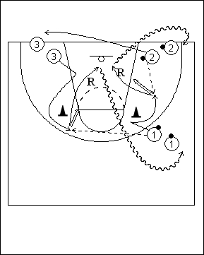

Catégorie : SHOOTS (Sh-002)
Déroulement
- Trois files. Les ballons se trouvent dans les files 1 et 2.
- Le premier joueur de la file 1 passe au premier joueur de la file 3 qui s’est démarqué pour prendre un shoot de l’elbow. Aussitôt après sa passe, le premier joueur de la file 1 se démarque à son tour pour recevoir le ballon du premier joueur de la file 2 et prendre un shoot de l’aile.
- Chaque shooteur effectue son rebond. 1 va en dribble dans la file 2. 2 va en 3. 3 va en dribble dans la file 1;
Coaching points
- Insister sur la qualité des démarquages (on peut ensuite mettre un défenseur sur les shooteurs pour les obliger à travailler pour recevoir le ballon).
- Demander aussi des shoots rapides après réception du ballon (Pivot sur le pied intérieur en préparant déjà le shoot).
- Enfin, exiger des rebonds immédiats, avec éventuellement un second shoot si le premier a été raté.